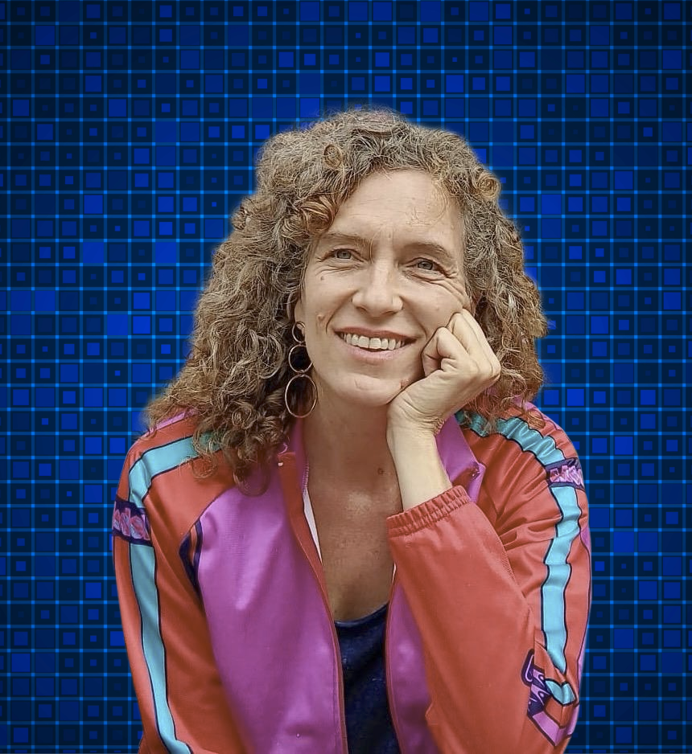

Das theaterStück
Kleine Wesen und ein Ei ist ein interaktiven, theatralen Form des Märchen-Erzählens, inszeniert für Kindern im Kita-Alter mit und ohne geistige Beeinträchtigung. Die künstlerische und pädagogische Form des Theaterstückes zielt dabei auf einen inklusiven Umgang und eine Verstärkung der Teilhabe, so dass ALLE Kindern sich einbezogen fühlen. Wir alle sind verschieden und jedes Kind hat ein Recht auf Kultur, das ist unsere tiefe Überzeugung und dafür setzen wir uns ein.
Die Geschichte im Überblick
Eines Tages fällt ein Ei aus einen Schiff. Aus diesem Ei schlüpft ein komischer Tier. Gerade geschlüpft, stellt sich der Vogel die grundlegendste aller Fragen: Warum bin ich hier? Was kann ich? Der komische Tier trifft sich mit anderen Tiere, einige sind selbst anders, andere stellen ihm wiederum die gleiche Fragen und manche versuchen diesem komischen Wesen zu helfen, diese Frage zu beantworten. Sie erzählt über den universalen Konflikt um das Anderssein. Es geht um die ewige unbeantwortbare Frage „wer bin ich?“ oder „warum bist Du anders?“. Das Projekt würde im Jahr 2023 durch den Projektfonds Kinder-, Jugend- und Puppentheater (Kia-B) gefördert.
Wer bin ich
Ich bin Clownin, Schauspielerin und Theaterpädagogin mit Leidenschaft für kreatives
Erzählen, Begegnung und Spiel.
2009 gründete ich gemeinsam mit Raquel Rives und Maria Ruiz-Larrea die Theatergruppe Rotonda Teatro.
Seitdem entwickeln wir Theaterstücke für Kinder und schaffen poetische, humorvolle und lebendige
Bühnenmomente für junges Publikum.
www.rotondateatro.org
Seit 2013 arbeite ich als Klinikclownin beim Verein Clownsprechstunde e.V. In verschiedenen Berliner
Einrichtungen begleite ich Kinder und Familien mit Humor, Sensibilität und Improvisation.
www.clownsprechstunde.berlin
Als Theaterpädagogin bin ich seit 2018 tätig. Ich leite kreative Gruppen in Kitas, Schulen und
öffentlichen Einrichtungen und begleite Menschen jeden Alters dabei, ihre Ausdruckskraft und Spielfreude
zu entdecken.
Aktuell findet ihr mich im Exploratorium Berlin, wo ich regelmäßig Workshops und theaterpädagogische
Angebote gebe.
www.exploratorium-berlin.de

Impressum
KLEINE WESEN UND EIN EI
Maybachufer, 6
12047 Berlin
Telefon: +49 / +49 / 30 64386206
kontakt: kleinewesenundeinei@gmail.com
Web: www.kleinewesenuneinei.com
© Kleinewesenundeinei 2024
KREDITTITEL
Originalidee und Drehbuch: Maria del Mar Taulés
Regieassistent: María Ruiz-Larrea
Marionettenbauer: Thomas Herfort
Design Logo und Flyers: Maria Rigol
Musik: Anna Taulés
Webseitengestaltung
Anna Taulés
Fotos Galerie: Clo Catalan
Design Flyer und Logo: Maria Rigol